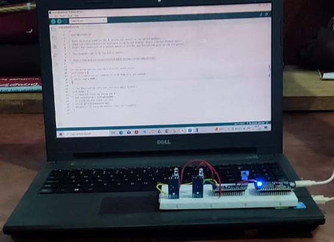
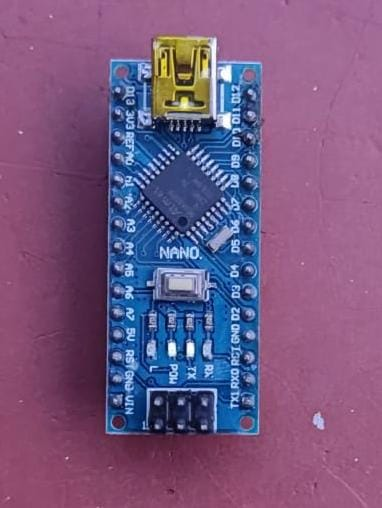
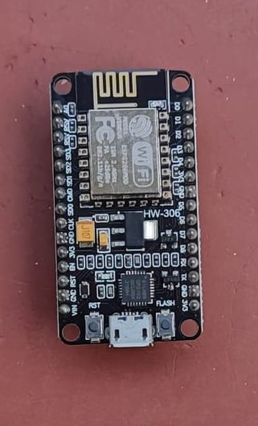
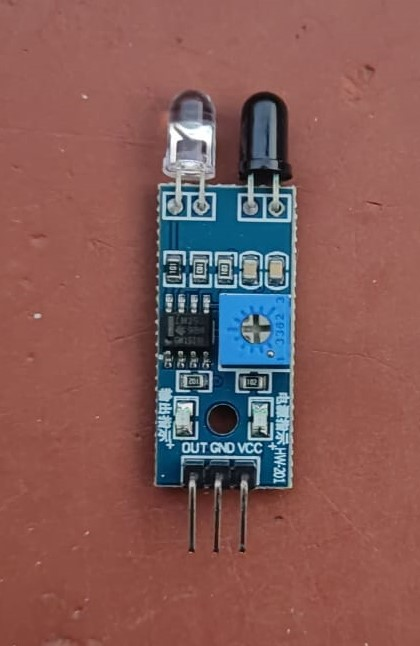
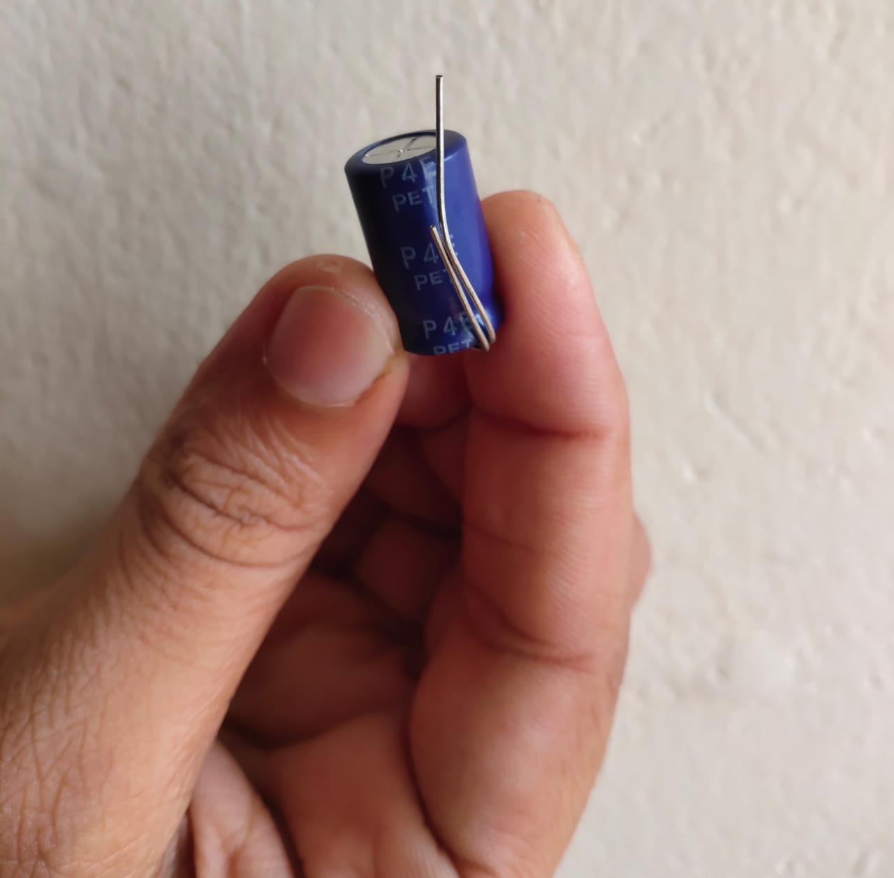
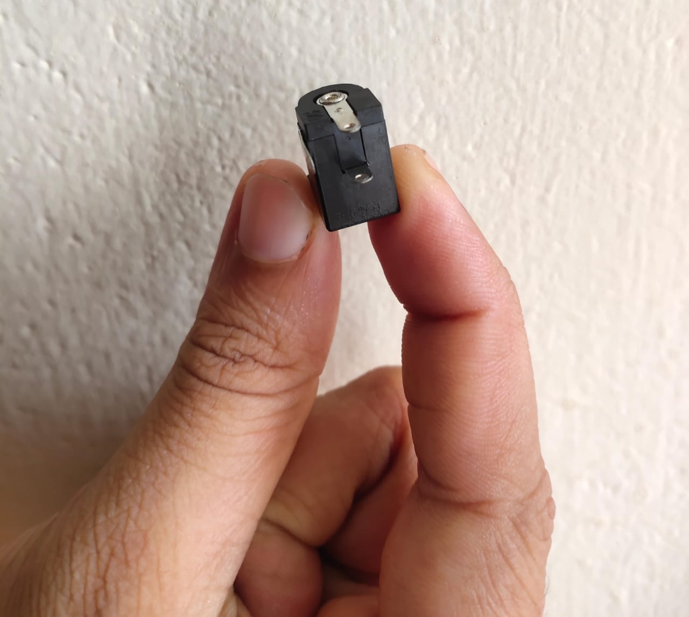
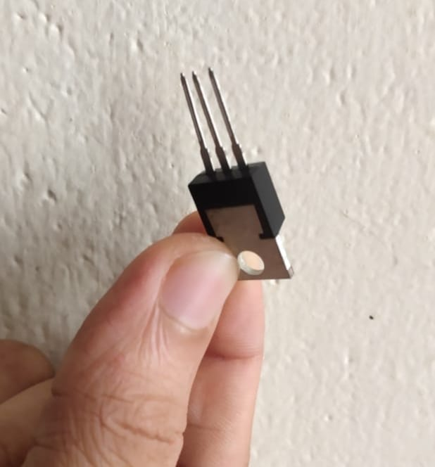

An IoT-based parking system provides real-time information on parking space availability, pricing, and beyond, evolving as a helpful tool for businesses and consumers. It positively impacts the environment and traffic. It also ensures efficient parking reservation and management.
Here The main aim of our project is to develop and implement an IoT-based car parking system. In this project, the tracking of vehicles in the parking slot is done automatically using IR sensors, car allowance inside the car parking area is monitored by ultrasonic sensors and displayed on the Blynk app. The Parking Counting System helps monitor the number of available spaces in the parking facility, providing real-time updates through an IoT platform.
The motivation behind this project stems from the need to optimize parking space utilization and alleviate the challenges posed by parking congestion. Traditional parking management systems often lack the capability to provide real-time information, leading to inefficiencies and frustration among drivers. The IoT-based car parking system aims to enhance user experience and improve overall urban mobility.
Due to the rapid increase in vehicles, there exists a problem for parking of vehicles. Too many cars, too much traffic, and not enough parking area lead to traffic congestion and pollution, especially in metropolitan cities. This project proposes an automatic car parking system using IR sensors, addressing the challenges of manual parking systems by providing information on parking space availability. The system uses Arduino, NodeMCU ESP8266 WiFi module, and the Blynk application.
Gather up the necessary building blocks
1)Arduino 2009: The Arduino 2009 is a microconroller board based on the ATmega328P. It's part of the Arduino family and provides a platform for building various electronics projects. Its features digital and analog input/output pins, onboard memory, and interfaces for connecting sensors, actuators, and other electronic components.
2)Node MCU: NodeMCU is an open source firmware and development board that uses the ESP8266 WiFi module. It allows for easy development of Internet of Things (IoT) projects by providing built-in WiFi connectivity and a Lua-based prograaming environment. NodeMCU is widely used for connecting devices to the Internet and exchanging data. 
3)IR sensors: Infrared (IR) sensors are devices that detect infra-red radiation emmtied by objects. In electronics, they are commonly used for proximity sensing, object detection and in remote controls. IR sensors can be crucial in various applications, such as robotics and security systems, where the detectors of infrared signals is essential.
4)Capacitors: Capacitors are elctronics components that store and release electrical energy. They are used to stabilize voltage, filter signals and store energy in electronics circuits. Capacitors come invarious types,including electrolytic and ceramic, each serving specific purposes in eectronics design.
5)DC Female Socket 30202: The DC Female Socket 30202 refers to a type of connetor used for direct current (DC) power input. It typically has two or more pins an is commonly employed in electronics devices to proivde a connection point for an external power sources. It is often used in conjunction with DC power adapters to supply power to circuit or devices.
6)IC 7805T: The IC 7805T is a voltage regulator integrated circuit. It is part of thw 78XX series of fixed linear voltage regulators, specifically designed to provide a stable and regulated output voltage of 5 volts. The IC 7805T is frequently used in electronics circuits to ensure a consistent power supply for various components, such as microcontrollers and sensors.
7)Other components:
Charging module for battery
Switch for device power control.
USB connectors for charging and power supply.
Electronic system development and integration
In the second phase of the Iot based car parking system project, the ficus shifts towards the meticulous design and assembly of the electronics circuits. Initiate the process by crafting a comprehensive schematic that delineates the connections between each component. Identify critical elements such as power requirements data lines,specific pins configurations. Guided by the schematic, methodically arrange the components ona prototyping board, ensuring anorderly layout for optimal space utilization. The subsequent step involves the intricate process of soldering connections, adhering closely to the schematic to establish secure and reliable joints. Throughout this phase, meticulous attention to detail is imperative to ensure the precision of each connection and the overall integrity of the circuit supporting the IoT-driven parking system.
Software development and system fusion
Advancing further, the third phase entails the development and amalgamation of key functionalties in the Iot based car parking system. Initiate the process by coding the microcontrollers responsible for managing sensor data and communication protocols, enabling seamless connectivity between parking spots and the entral system. Simultaneously, refine the existing code to accommodate additional features, such as real time occupency tracking and automated payment processing. With the codebases enhanced, proceed to integrate cloud based services for data storage and analysis, ensuring efficient management of parking information. The final tep in this stage involves deploying the consolidated code to both the sensors.
Culmination and evaluation
Approaching the project's conclusion, the emphasis turns towards the ultimate assembly ad comprehensive testing. Safeguard all components within a suitable enclosure, meticulously considering organization and protectivemeasures. The finalized device should embody a refined and efficient design. With thephysical assembly concluded, initiate meticulous testing of the entire system. Validate the functionality of real-time occupancy tracking, automated payment processing, and seamless connectivity with cloud-based services. This critical phase ensures that the IoT-based car parking system operates according to specifications, meeting the outlined project requirements. Thorough documentation of the assembly process and testing outcomes serves as a valuable resource for future enhancements or similar projects.
#include
SoftwareSerial nodemcu(2,3);
int parking1_slot1_ir_s = 4; // parking slot1 infrared sensor connected with pin number 4 of arduino
int parking1_slot2_ir_s = 5;
int parking1_slot3_ir_s = 6;
int parking2_slot1_ir_s = 7;
int parking2_slot2_ir_s = 8;
int parking2_slot3_ir_s = 9;
String sensor1;
String sensor2;
String sensor3;
String sensor4;
String sensor5;
String sensor6;
String cdata =””; // complete data, consisting of sensors values
void setup()
{
Serial.begin(9600);
nodemcu.begin(9600);
pinMode(parking1_slot1_ir_s, INPUT);
pinMode(parking1_slot2_ir_s, INPUT);
pinMode(parking1_slot3_ir_s, INPUT);
pinMode(parking2_slot1_ir_s, INPUT);
pinMode(parking2_slot2_ir_s, INPUT);
pinMode(parking2_slot3_ir_s, INPUT);
}
void loop()
{
p1slot1();
p1slot2();
p1slot3();
p2slot1();
p2slot2();
p2slot3();
cdata = cdata + sensor1 +”,” + sensor2 + “,”+ sensor3 +”,”+ sensor4 + “,” + sensor5 + “,” + sensor6 +”,”; // comma will be used a delimeter
Serial.println(cdata);
nodemcu.println(cdata);
delay(6000); // 100 milli seconds
cdata = “”;
digitalWrite(parking1_slot1_ir_s, HIGH);
digitalWrite(parking1_slot2_ir_s, HIGH);
digitalWrite(parking1_slot3_ir_s, HIGH);
digitalWrite(parking2_slot1_ir_s, HIGH);
digitalWrite(parking2_slot2_ir_s, HIGH);
digitalWrite(parking2_slot3_ir_s, HIGH);
}
void p1slot1() // parkng 1 slot1
{
if( digitalRead(parking1_slot1_ir_s) == LOW)
{
sensor1 = “255”;
delay(200);
}
if( digitalRead(parking1_slot1_ir_s) == HIGH)
{
sensor1 = “0”;
delay(200);
}
}
void p1slot2() // parking 1 slot2
{
if( digitalRead(parking1_slot2_ir_s) == LOW)
{
sensor2 = “255”;
delay(200);
}
if( digitalRead(parking1_slot2_ir_s) == HIGH)
{
sensor2 = “0”;
delay(200);
}
}
void p1slot3() // parking 1 slot3
{
if( digitalRead(parking1_slot3_ir_s) == LOW)
{
sensor3 = “255”;
delay(200);
}
if( digitalRead(parking1_slot3_ir_s) == HIGH)
{
sensor3 = “0”;
delay(200);
}
}
// now for parking 2
void p2slot1() // parking 1 slot3
{
if( digitalRead(parking2_slot1_ir_s) == LOW)
{
sensor4 = “255”;
delay(200);
}
if( digitalRead(parking2_slot1_ir_s) == HIGH)
{
sensor4 = “0”;
delay(200);
}
}
void p2slot2() // parking 1 slot3
{
if( digitalRead(parking2_slot2_ir_s) == LOW)
{
sensor5 = “255”;
delay(200);
}
if( digitalRead(parking2_slot2_ir_s) == HIGH)
{
sensor5 = “0”;
delay(200);
}
}
void p2slot3() // parking 1 slot3
{
if( digitalRead(parking2_slot3_ir_s) == LOW)
{
sensor6 = “255”;
delay(200);
}
if( digitalRead(parking2_slot3_ir_s) == HIGH)
{
sensor6 = “0”;
delay(200);
}
}
Nodemcu esp8266 wifi module Programming of IoT based car parking:
#define BLYNK_PRINT Serial
#include
#include
#include
#include
char auth[] = “ac173b0527c94a91a6cde0dcdfe6bdef”;
// Your WiFi credentials.
// Set password to “” for open networks.
char ssid[] = “ZONG MBB-E8231-6E63”;
char pass[] = “08659650”;
SimpleTimer timer;
String myString; // complete message from arduino, which consistors of snesors data
char rdata; // received charactors
int firstVal, secondVal,thirdVal; // sensors
int led1,led2,led3,led4,led5,led6;
// This function sends Arduino’s up time every second to Virtual Pin (1).
// In the app, Widget’s reading frequency should be set to PUSH. This means
// that you define how often to send data to Blynk App.
void myTimerEvent()
{
// You can send any value at any time.
// Please don’t send more that 10 values per second.
Blynk.virtualWrite(V1, millis() / 1000);
}
void setup()
{
// Debug console
Serial.begin(9600);
Blynk.begin(auth, ssid, pass);
timer.setInterval(1000L,sensorvalue1);
timer.setInterval(1000L,sensorvalue2);
timer.setInterval(1000L,sensorvalue3);
timer.setInterval(1000L,sensorvalue4);
timer.setInterval(1000L,sensorvalue5);
timer.setInterval(1000L,sensorvalue6);
}
void loop()
{
if (Serial.available() == 0 )
{
Blynk.run();
timer.run(); // Initiates BlynkTimer
}
if (Serial.available() > 0 )
{
rdata = Serial.read();
myString = myString+ rdata;
// Serial.print(rdata);
if( rdata == ‘\n’)
{
Serial.println(myString);
// Serial.println(“fahad”);
// new code
String l = getValue(myString, ‘,’, 0);
String m = getValue(myString, ‘,’, 1);
String n = getValue(myString, ‘,’, 2);
String o = getValue(myString, ‘,’, 3);
String p = getValue(myString, ‘,’, 4);
String q = getValue(myString, ‘,’, 5);
// these leds represents the leds used in Blynk application
led1 = l.toInt();
led2 = m.toInt();
led3 = n.toInt();
led4 = o.toInt();
led5 = p.toInt();
led6 = q.toInt();
myString = “”;
// end new code
}
}
}
void sensorvalue1()
{
int sdata = led1;
// You can send any value at any time.
// Please don’t send more that 10 values per second.
Blynk.virtualWrite(V10, sdata);
}
void sensorvalue2()
{
int sdata = led2;
// You can send any value at any time.
// Please don’t send more that 10 values per second.
Blynk.virtualWrite(V11, sdata);
}
void sensorvalue3()
{
int sdata = led3;
// You can send any value at any time.
// Please don’t send more that 10 values per second.
Blynk.virtualWrite(V12, sdata);
}
void sensorvalue4()
{
int sdata = led4;
// You can send any value at any time.
// Please don’t send more that 10 values per second.
Blynk.virtualWrite(V13, sdata);
}
void sensorvalue5()
{
int sdata = led5;
// You can send any value at any time.
// Please don’t send more that 10 values per second.
Blynk.virtualWrite(V14, sdata);
}
void sensorvalue6()
{
int sdata = led6;
// You can send any value at any time.
// Please don’t send more that 10 values per second.
Blynk.virtualWrite(V15, sdata);
}
String getValue(String data, char separator, int index)
{
int found = 0;
int strIndex[] = { 0, -1 };
int maxIndex = data.length() – 1;
for (int i = 0; i <= maxIndex && found <= index; i++) {
if (data.charAt(i) == separator || i == maxIndex) {
found++;
strIndex[0] = strIndex[1] + 1;
strIndex[1] = (i == maxIndex) ? i+1 : i;
}
}
return found > index ? data.substring(strIndex[0], strIndex[1]) : “”;
}
The IoT-based car parking system presented in this project represents a significant step towards addressing the challenges associated with parking congestion in urban areas. By providing real-time information about parking space availability, the system contributes to more efficient space utilization and improved traffic flow. Further research and development in this area can lead to the widespread adoption of smart parking solutions, contributing to smarter and more sustainable urban environments.